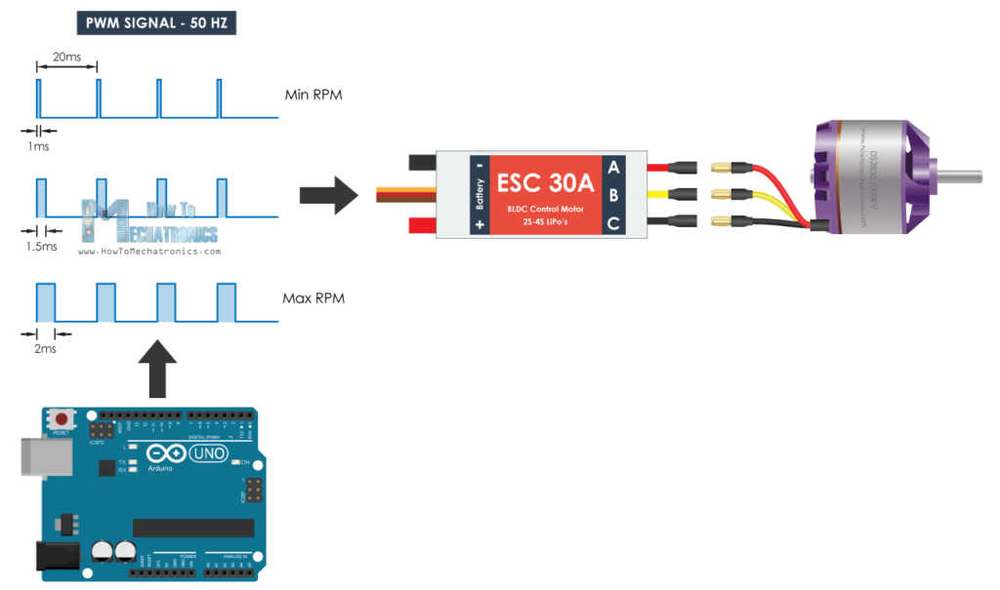

Controlling a Brushless Motor With Raspberry Pi¶
The focus of this post is to control a brushless motor from an automation point of view. Imagine an autonomous vehicle that grabs boxes from a storage rack. It has several motors, and a small computer (a Raspberry Pi for example) that controls the motors based on what it is told over, say, an internet connection. The vehicle might also do image recognition, which is why choosing something more powerful than an Arduino might be a good idea.
There is quite a bit of information out there on the Internet about how to talk to an Electronic Speed Controller (ESC - the thing that actually controls the motor). Those pages explain the topic in the context of microcontroller programming, or even in the context of a ready-made flight/drone firmware that is put onto Arduinos.
This post shows how to run the motor with not one single line of
code. We use the Linux sysfs PWM interface from the commandline
to run the motor.
Setup¶
First, the wiring …
This is much the same as in the PWM topic. There, we used channel 0 (pin 6) to control the brighness of an LED. Here, we use the same pin as input to the ESC’s signal wire.
See the PWM topic for an explanation of what PWM is, and how to use a Raspberry Pi and the PCA9685 to generate PWM signals. This is information that is heavily used in the remainder of this post.
Note
Unfortunately, the default permissions of the sysfs PWM interface
are root/root, so we have to be logged in as root. sudo -i
will do the job, for example.
pi@heinrich:~ $ sudo -i
SSH is enabled and the default password for the 'pi' user has not been changed.
This is a security risk - please login as the 'pi' user and type 'passwd' to set a new password.
root@heinrich:~#
That said, we use channel 0 (available through pin 6) to communicate with the ESC, so lets export that and move ourselves there …
root@heinrich:~# cd /sys/class/pwm/pwmchip0/
root@heinrich:/sys/class/pwm/pwmchip0# echo 0 > export
root@heinrich:/sys/class/pwm/pwmchip0# cd pwm0/
root@heinrich:/sys/class/pwm/pwmchip0/pwm0# ls -l
total 0
-r--r--r-- 1 root root 4096 Aug 8 15:08 capture
-rw-r--r-- 1 root root 4096 Aug 8 15:08 duty_cycle
-rw-r--r-- 1 root root 4096 Aug 8 15:08 enable
-rw-r--r-- 1 root root 4096 Aug 8 15:08 period
-rw-r--r-- 1 root root 4096 Aug 8 15:08 polarity
drwxr-xr-x 2 root root 0 Aug 8 15:08 power
-rw-r--r-- 1 root root 4096 Aug 8 15:08 uevent
Electronic Speed Controller (ESC)¶
Watch the video below to learn how brushless motors work, and what the job of an ESC is. That video also explains briefly what Pulse Width Modulation (PWM) is; see here for more.
This topic is about speed controllers that use PWM as “command protocol”. While using PWM as a protocol sounds like a poor architectural decision - to say the least - such controllers are the most common, and I believe they are also cheapest, which is why one such - Quicrun 16BL30 - was chosen for this little prototype project.
Check out the datasheet/manual of the 16BL30, I’ll refer to it below.
Select Running Mode: “Fwd/Rev”¶
Point of the project is to drive an autonomous vehicle; this is different from flying a drone (only forward rotation), or driving an RC car (where one wants forward, backward, and brake). What we want is forward and backward rotation: software controls vehicle movement entirely, no need to brake. Select that mode, according to the ESC “datasheet”.
Turn off ESC
Hold the SET button
Switch on ESC
Wait: Red LED flashes, and then green LED flashes once
Release SET button
Cycle through modes, pressing SET button
Forward with brake (one red LED flash)
Forward/reverse with brake (two red LED flashes; this is the default mode)
Forward/reverse (three red LED flashes): stop here
Turn off ESC to select that mode
All that in a video …
The “Command Protocol”, and Calibration¶
Turn on the ESC. It will go into error mode immediately because nothing is set up.
Green LED flashes three times: the ESC sees that the supplied voltage is 11V (which is what I configured my power supply to output), from which it concludes that the LiPo battery has three cells.
Red LED blinks madly. This is a safety feature of the ESC: it requires that the RC transmitter’s throttle is in neutral position. If this is not the case, the ESC refuses to chop one’s fingers off and does not start the motor.
We do not have an RC transmitter and a throttle, nor do we have an RC receiver that generates a suitable PWM signal on the ESC signal input. We do have a Raspberry though that is supposed to play that role. We just haven’t configured the PWM signal, which is why the ESC refuses to do anything.
The following picture (kindly stolen from “How To Mechatronics”) shows what is expected from us.
So the ESC’s “command protocol” requires us to output a PWM signal with a 50Hz (20ms) period. Within that period, the PWM signal’s duty cycle is used to communicate the following commands to the ESC.
Neutral position. The middle diagram in the picture, 1.5ms.
Backward rotation. The top diagram; everything between 1ms and 1.5ms lets the motor run backwards. 1ms is maximum backwards speed.
Forward rotation. The bottom diagram; everything between 1.5ms and 2ms runs the motor forward. 2ms is maximum forward speed.
Before we continue, we configure the base PWM period to 20ms. The Linux PWM subsystem’s PWM timings are configured in nanoseconds, so this is 20,000,000 nanoseconds.
# pwd
/sys/class/pwm/pwmchip0/pwm0
# cat period
0
# echo 20000000 > period
PWM frequencies are a rather poor way of implementing a protocol. They depend on oscillator frequencies, supply voltages, and whatnot. This means that you have to calibrate the ESC with your specific situation before you can expect to talk to it and actually run a motor. For the 10BL60, the calibration procedure is defined in the datasheet, “Set up Throttle Range”.
Turn off ESC
Hold the SET button
Switch on ESC
Release SET button once the red LED flashes. The ESC is now in a mode where it expects three different PWM signals in that order
Neutral position. 1.5ms, or 1,500,000ns.
# echo 1500000 > duty_cycle
Press SET button to capture; acknowledged by green LED blinking once.
Maximum forward. 2ms, or 2,000,000ns.
# echo 2000000 > duty_cycle
Press SET button to capture; acknowledged by green LED blinking twice.
Maximum backward. 1ms, or 1,000,000ns.
# echo 1000000 > duty_cycle
Press SET button to capture; acknowledged by green LED blinking three times.
All that in a video …
Driving the Motor¶
Controller calibrated, all set, we are now ready to drive the motor.
# echo 1550000 > duty_cycle
# echo 1600000 > duty_cycle
# echo 2000000 > duty_cycle
# echo 1500000 > duty_cycle
Some commandline shell programming, as a quick prototype of a hypothetical program …
# for i in 1550000 1600000 1650000 1700000 1750000 1800000 1850000 1900000 1950000 2000000; do
> echo $i > duty_cycle
> sleep 0.5
> done
Conclusion¶
While there was some fun to have from this prototype project, I can imagine that autonomous vehicles will not be equipped with such kinds of motors/controllers. I tried this out for a friend who is into logistics and automation, and whose hobby is RC airplanes (which might explain much). PWM is a rather poor way of communication; the calibration procedure is nothing that is wanted in production. There are ESCs that use CAN, for example, which is a real and much higher level protocol that has no quirks.
It is a starting point however - in most cases it is much more important to know what you don’t want, and why, than to know what you want (you never do).
The fun part for me is to show how hardware is integrated into Linux,
and how this fits into the good old Unix paradigms. For PWM, for example, sysfs is used to expose PWM chips and their
channels to the user - who is then able to control it using simple
shell commands. It does not require too much fantasy to come up with a
programmatic to do what we did on the commandline - one can use any
language that is capable of doing file I/O. Much unlike bare metal
microcontroller programming - this usually requires a good
understanding of C/C++ and all the pitfalls such languages and
environments involve.